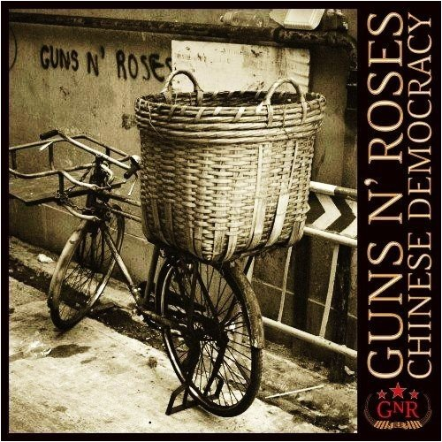

Chinese Democracy
Chinese Democracy is the sixth studio album by American hard rock band Guns N' Roses. It was released on November 23, 2008, by Geffen Records. The album was the band's first studio album since "The Spaghetti Incident?" in November 1993, and their first album of original studio material since the simultaneous releases of Use Your Illusion I and II in September 1991. Although it debuted at number three on the Billboard 200 and was certified Platinum by the Recording Industry Association of America (RIAA), Chinese Democracy domestically undersold expectations. It received generally favorable reviews from music critics. The album achieved international chart success and has sold over one million copies in Europe